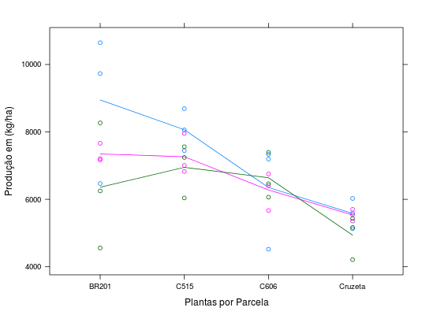

Dados referente ao experimento conduzido por Rezende et al. (1994), envolvendo 4 cultivares de milho consorciadas com 3 de feijão.
Um data.frame com 36 observações e 5 variáveis, em que
milhfeijblocprodplantRAMALHO et al. (2005), Exemplo 13.2, pág. 237.
Rezende, G. D. S. P.; Ramalho, M. A. P. Competitive Ability of Maize and Commom Bean (Phaseolus Vulgaris L.) Cultivars Intercropped in Different Environments. Euphytica. Wageningen. v.123, n.2. 1994.
data(RamalhoEg13.2)#> Warning: data set ‘RamalhoEg13.2’ not foundstr(RamalhoEg13.2)#> 'data.frame': 36 obs. of 5 variables: #> $ milh : Factor w/ 4 levels "BR201","C515",..: 1 1 1 4 4 4 2 2 2 3 ... #> $ feij : Factor w/ 3 levels "Carioca","E585",..: 3 2 1 3 2 1 3 2 1 3 ... #> $ bloc : Factor w/ 3 levels "1","2","3": 1 1 1 1 1 1 1 1 1 1 ... #> $ prod : int 8268 7170 10646 4211 5357 5589 6040 7006 7445 7392 ... #> $ plant: int 20 20 20 18 20 18 21 19 20 20 ...ftable(with(RamalhoEg13.2, tapply(prod, list(milh = milh, feij = feij, bloc = bloc), FUN = mean)))#> bloc 1 2 3 #> milh feij #> BR201 Carioca 10646 6469 9732 #> E585 7170 7207 7663 #> E645 8268 4557 6249 #> C515 Carioca 7445 8059 8690 #> E585 7006 7956 6826 #> E645 6040 7243 7561 #> C606 Carioca 4520 7194 7336 #> E585 6752 5670 6410 #> E645 7392 6464 6063 #> Cruzeta Carioca 5589 5128 6027 #> E585 5357 5703 5545 #> E645 4211 5430 5166library(lattice) xyplot(prod ~ milh, data = RamalhoEg13.2, groups = feij, type=c("p", "a"), xlab = "Plantas por Parcela", ylab = "Produção em (kg/ha)")